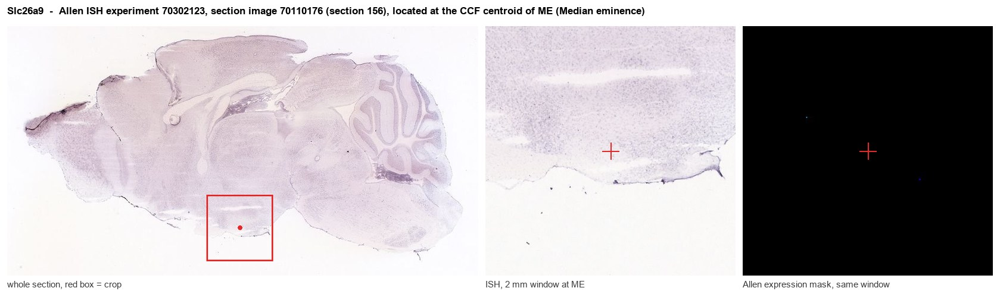
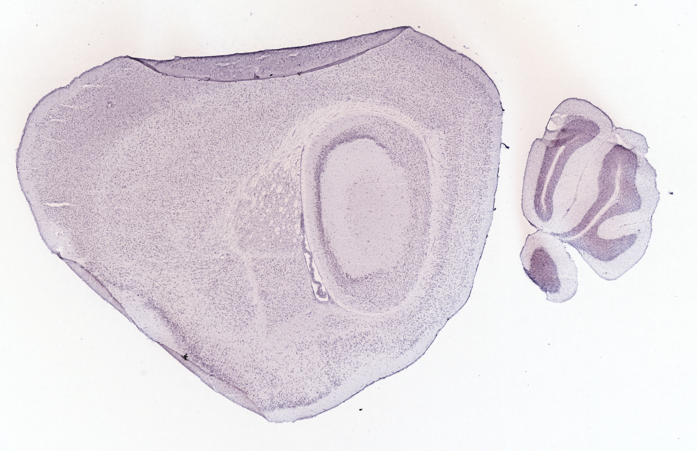
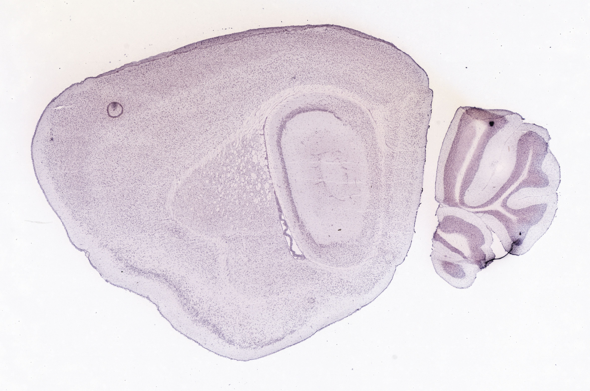
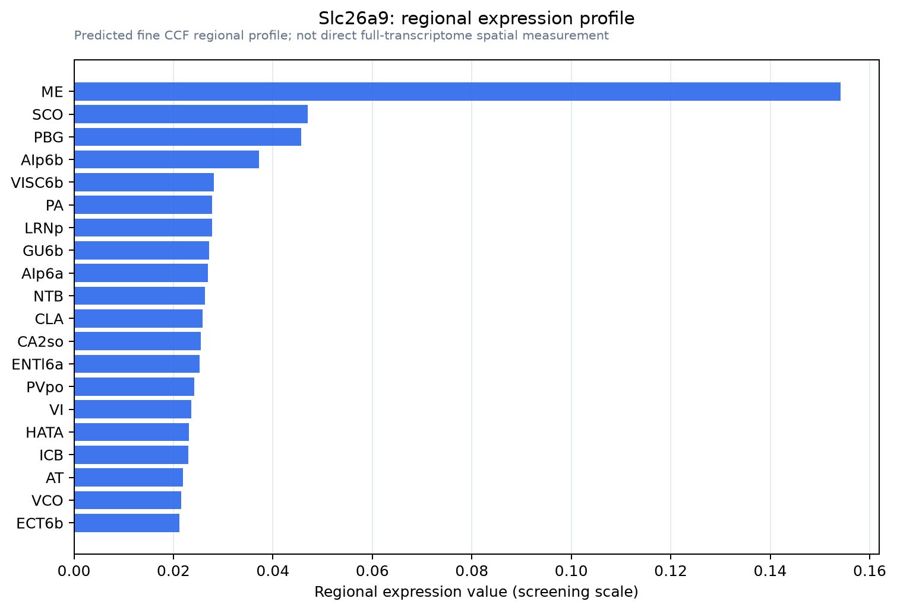

Slc26a9
Solute carrier family 26 member 9 (Anion transporter/exchanger protein 9)
Spatial tier: STRICT_EXCLUSIVE · Class: ION_CHANNEL · Top region: ME (Median eminence) · Positive regions: 3/554
47.6Discovery Score
35.9Targetability Score
CEvidence grade C
What this means: Slc26a9: predicted fine-region profile is strict-exclusive, with 3 positive regions out of 554 (limit 12); direct spatial validation is required.
Function in ME: evidence, prediction, innovation
- Gene function
- Slc26a9 encodes SLC26A9, an SLC26-family protein acting mainly as a constitutively active Cl- channel, with additional anion-exchange and Na+-coupled modes. Its cytoplasmic STAS domain is regulated by the CFTR R-region. It mediates Cl- and fluid transport in stomach, airway and intestinal epithelia and is a cystic fibrosis modifier.
- Region function
- The median eminence is the hypothalamic neurohaemal interface: tanycyte end-feet and neurosecretory terminals contact fenestrated portal capillaries, releasing hypophysiotropic hormones and controlling exchange between blood, CSF and the arcuate nucleus.
- Published in this region
- inferred No region-specific literature found. Closest: Slc26a9 mRNA is detectable in brain alongside dominant epithelial expression (Chang et al. 2009, J Membr Biol; Liu et al. 2018, Front Physiol), and loss of SLC26A9-mediated Cl- secretion causes epithelial mucus plugging (Millar-Buchner et al. 2025, JCI Insight).
- Predicted function
- Prediction: SLC26A9 would most plausibly sit in the polarised tanycyte epithelium of the third-ventricle floor, providing a constitutive Cl- conductance for transependymal fluid movement and for setting tanycyte membrane potential and volume during Ca2+ and glucose responses. Knockout should perturb CSF-to-portal ion handling, tanycyte volume regulation and nutrient-signal relay, with subtle feeding and neuroendocrine effects rather than gross endocrine failure.
- Innovation
- ★★★★★ 5/5 A well-characterised epithelial anion channel with essentially no neuroscience literature, in a region whose defining cells are a secretory epithelium.
- Tools
- Slc26a9 knockout mice; anti-SLC26A9 antibodies; no Cre driver known; tanycyte targeting via Rax-CreERT2 and ICV AAV; no selective pharmacology.
- References
Direct evidence located at the region

Allen ISH experiment 70302123, section image 70110176 (section 156): the section that contains the CCF centroid of Median eminence according to the Allen image-to-atlas alignment (reference_to_image), with a 2 mm window around that point. Left: whole section, red box = window. Middle: ISH signal. Right: Allen's expression-mask view of the same window. open this image in the Allen viewer
Look it up yourself: Allen Mouse Brain ISH for Slc26a9Allen reference atlas: ME (structure 10671)ABC Atlas MERFISH viewer(in the ABC Atlas choose dataset MERFISH-C57BL6J-638850-CCF, colour cells by gene "Slc26a9" or by parcellation_substructure "ME")All genes confined to ME + 3-D brain
Direct spatial evidence
MERFISH REGION LOCATOR

DIRECT ALLEN ISH

DIRECT ALLEN ISH

Regional expression figure

Predicted WMB × fine-CCF profile; not direct full-transcriptome spatial measurement.
Spatial profile
Evidence and specificity
- Evidence status
- PREDICTED_FINE
- Direct sources
- None; predicted localization only
- Exclusive threshold
- 12 positive regions out of 554
- Spatial specificity
- 0.326
- Top-region fraction
- 0.144
- Filter status
- PASS
Interpretation limits
- Cell-type-to-region projection is imputed expression, not direct spatial measurement.
- Adult reference atlases do not establish stability across age, sex, strain, state, or disease.
- Transcript abundance does not guarantee protein abundance or genetic-tool performance.